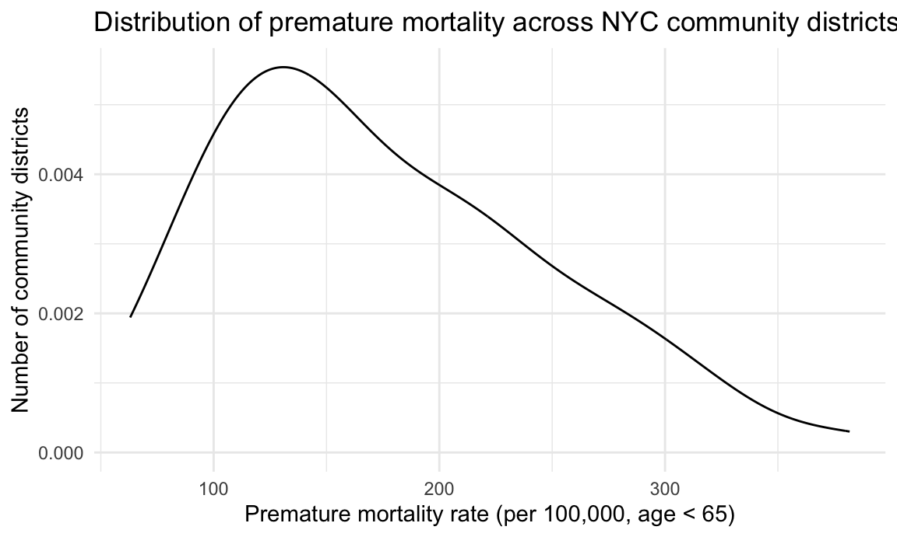
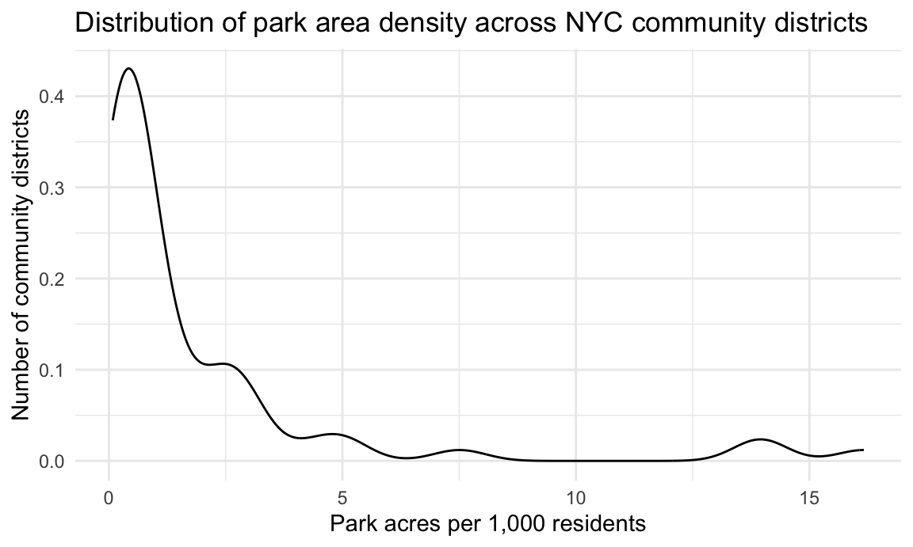
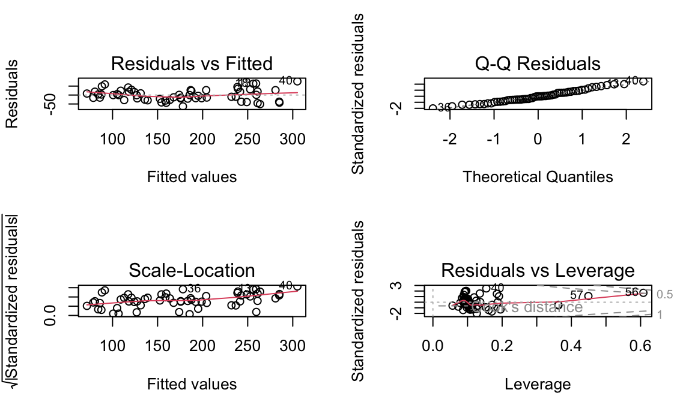
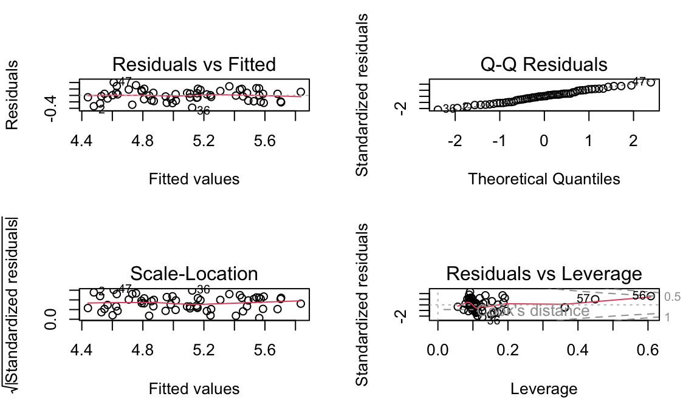
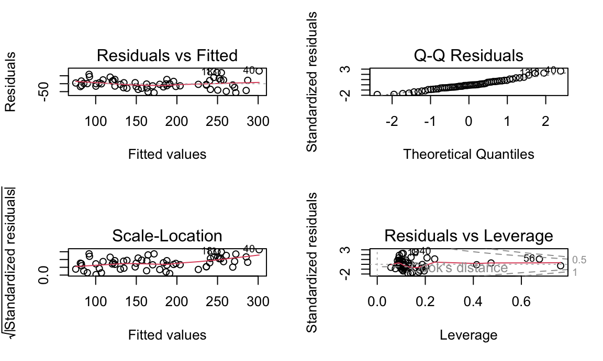

We first assembled neighborhood-level measures of health and sociodemographic context using the Community Health Profiles (CHP) dataset. This resource provides demographic, socioeconomic, behavioral, and health outcome indicators for New York City’s 59 community districts. Because the CHP worksheet includes a descriptive header row, we skipped the first line and treated the second row as the variable names. We then restricted the data to community districts (excluding borough-wide or citywide aggregates) and retained premature mortality measures alongside key covariates that our exploratory analysis and prior literature suggested would be important confounders, including poverty and the percent of Black residents.
clean_chp_df <-
read_excel("data/2022-chp-pud.xlsx",
sheet = "CHP_all_data",
skip = 1) |>
clean_names() |>
transmute(
cd_id = as.integer(id),
borough = borough,
cd_name = name,
overall_pop = overall_pop,
premature_mort_number = premature_mort_number,
premature_mort_rate = premature_mort_rate,
poverty = poverty,
race_black = race_black) |>
filter(cd_id >= 101)Next, we imported the NYC Parks Properties dataset, which includes acreage, administrative, and location information for individual parks. Because many parks span multiple community boards, we expanded rows so that each community board–park combination appears on its own row. We then standardized community board codes and aggregated park area to obtain total park acres within each community district. These aggregated values form the basis for our main exposure: neighborhood park access.
clean_parks_df <-
read_csv("data/Parks_Properties_20251104.csv") |>
clean_names() |>
mutate(
communityboard = as.character(communityboard)
) |>
separate_rows(communityboard, sep = "[/,]") |>
mutate(
communityboard = str_trim(communityboard),
cd_id = as.integer(communityboard)
) |>
filter(
!is.na(cd_id),
cd_id >= 101, cd_id <= 599,
!is.na(acres),
acres > 0
) |>
group_by(cd_id) |>
summarize(
total_park_acres = sum(acres, na.rm = TRUE),
n_parks = n(),
.groups = "drop"
)We then merged the CHP and Parks datasets using community district identifiers (cd_id). To make park access comparable across districts of very different sizes, we calculated a population-standardized measure of park density—park acres per 1,000 residents. Finally, we restricted the analytic dataset to community districts with complete data on the exposure, outcome, and covariates. This gave us a clean, community-district-level dataset for modeling.
analysis_df <-
clean_chp_df |>
left_join(clean_parks_df, by = "cd_id") |>
mutate(
park_acres_per_1000 = total_park_acres / (overall_pop / 1000)
) |>
drop_na(park_acres_per_1000, premature_mort_rate) |>
mutate(borough = factor(borough))We began our exploratory analysis by summarizing the key features of this analytic dataset, including the distributions of premature mortality, park density, and major sociodemographic variables. These summaries provided a high-level view of variation in both the exposure and outcome across community districts and helped us gauge the overall scale and heterogeneity of the data.
analysis_df |>
summarize(
n_cd = n(),
mean_park_acres_per_1000 = mean(park_acres_per_1000, na.rm = TRUE),
sd_park_acres_per_1000 = sd(park_acres_per_1000, na.rm = TRUE),
mean_premort_rate = mean(premature_mort_rate, na.rm = TRUE),
sd_premort_rate = sd(premature_mort_rate, na.rm = TRUE),
mean_poverty = mean(poverty, na.rm = TRUE),
mean_race_black = mean(race_black, na.rm = TRUE)
) |>
kable(digits = 3)| n_cd | mean_park_acres_per_1000 | sd_park_acres_per_1000 | mean_premort_rate | sd_premort_rate | mean_poverty | mean_race_black |
|---|---|---|---|---|---|---|
| 59 | 1.892 | 3.335 | 176.112 | 72.724 | 19.241 | 22.573 |
We next visualized the marginal distributions of park acres per 1,000 residents and premature mortality rates. These plots allowed us to examine skewness, identify potential outliers, and get an initial sense of whether a linear regression framework was a reasonable starting point.
# Premature mortality
analysis_df |>
ggplot(aes(x = premature_mort_rate)) +
geom_density() +
labs(
x = "Premature mortality rate (per 100,000, age < 65)",
y = "Number of community districts",
title = "Distribution of premature mortality across NYC community districts"
)
# Park density
analysis_df |>
ggplot(aes(x = park_acres_per_1000)) +
geom_density() +
labs(
x = "Park acres per 1,000 residents",
y = "Number of community districts",
title = "Distribution of park area density across NYC community districts"
)
To investigate the crude relationship between park access and premature mortality, we created a scatterplot of premature mortality versus park acres per 1,000 residents citywide. Overlaying simple linear fits provided an initial visual check on the direction and approximate shape of the relationship.
analysis_df |>
mutate(
label = paste0(
cd_name, "<br>",
"Park acres per 1,000: ", round(park_acres_per_1000, 2), "<br>",
"Premature mortality: ", round(premature_mort_rate, 1)
)
) |>
plot_ly(
x = ~park_acres_per_1000,
y = ~premature_mort_rate,
color = ~borough,
text = ~label,
type = "scatter",
mode = "markers"
) |>
add_lines(
x = ~park_acres_per_1000,
y = fitted(lm(premature_mort_rate ~ park_acres_per_1000, data = analysis_df)),
inherit = FALSE,
showlegend = FALSE
) |>
layout(
title = "Park area density and premature mortality across NYC community districts",
xaxis = list(title = "Park acres per 1,000 residents"),
yaxis = list(title = "Premature mortality rate (per 100,000, age < 65)")
)Our modeling began with a simple linear regression using premature mortality as the outcome and park acres per 1,000 residents as the sole predictor. This “crude” model captures the unadjusted association between park density and premature mortality and serves as a baseline for comparison with more complex models.
model_base <- lm(premature_mort_rate ~ park_acres_per_1000, data = analysis_df)
kable(tidy(model_base), digits = 3)| term | estimate | std.error | statistic | p.value |
|---|---|---|---|---|
| (Intercept) | 172.972 | 10.971 | 15.766 | 0.000 |
| park_acres_per_1000 | 1.659 | 2.880 | 0.576 | 0.567 |
kable(glance(model_base), digits = 3)| r.squared | adj.r.squared | sigma | statistic | p.value | df | logLik | AIC | BIC | deviance | df.residual | nobs |
|---|---|---|---|---|---|---|---|---|---|---|---|
| 0.006 | -0.012 | 73.146 | 0.332 | 0.567 | 1 | -335.955 | 677.911 | 684.143 | 304972.9 | 57 | 59 |
Because our EDA showed clear borough-level differences in both park access and demographic composition, we next extended the model to include borough fixed effects. This adjustment helps account for systematic differences in the built environment, policy context, and health systems across boroughs and focuses the association on within-borough variation in park density.
model_borough <- lm(premature_mort_rate ~ park_acres_per_1000 + borough, data = analysis_df)
kable(tidy(model_borough), digits = 3)| term | estimate | std.error | statistic | p.value |
|---|---|---|---|---|
| (Intercept) | 238.112 | 18.469 | 12.893 | 0.000 |
| park_acres_per_1000 | 3.950 | 3.260 | 1.212 | 0.231 |
| boroughBrooklyn | -53.502 | 23.116 | -2.314 | 0.025 |
| boroughManhattan | -103.663 | 25.236 | -4.108 | 0.000 |
| boroughQueens | -113.956 | 24.495 | -4.652 | 0.000 |
| boroughStaten Island | -98.859 | 50.296 | -1.966 | 0.055 |
kable(glance(model_borough), digits = 3)| r.squared | adj.r.squared | sigma | statistic | p.value | df | logLik | AIC | BIC | deviance | df.residual | nobs |
|---|---|---|---|---|---|---|---|---|---|---|---|
| 0.343 | 0.281 | 61.664 | 5.534 | 0 | 5 | -323.734 | 661.468 | 676.01 | 201529 | 53 | 59 |
model_metrics_1 = tibble(
Model = c("model_base", "model_borough"),
AIC = c(AIC(model_base), AIC(model_borough)),
BIC = c(BIC(model_base), BIC(model_borough))
)
kable(model_metrics_1, digits = 3)| Model | AIC | BIC |
|---|---|---|
| model_base | 677.911 | 684.143 |
| model_borough | 661.468 | 676.010 |
To build a more rigorous and interpretable model, we then incorporated additional covariates from the CHP dataset. Guided by our exploratory analysis and public health literature, we focused on variables that are both conceptually important and empirically strong predictors of premature mortality. Poverty and racial composition (captured here as the percent of Black residents) are well-established determinants of health and are closely linked to structural inequities across New York City. Our final main-effects model therefore includes poverty and percent Black residents as key covariates, while retaining borough fixed effects and our primary exposure, park density.
This specification represents a balance between explanatory power and parsimony. It adjusts for major confounding pathways without saturating the model with highly collinear variables, and it allows us to estimate the association between park access and premature mortality in the context of neighborhood-level socioeconomic and structural conditions.
final_model <- lm(premature_mort_rate ~ park_acres_per_1000 + poverty + race_black + borough,
data = analysis_df)
kable(tidy(final_model, conf.int = TRUE), digits = 3)| term | estimate | std.error | statistic | p.value | conf.low | conf.high |
|---|---|---|---|---|---|---|
| (Intercept) | 28.432 | 25.558 | 1.112 | 0.271 | -22.878 | 79.741 |
| park_acres_per_1000 | 4.957 | 1.807 | 2.743 | 0.008 | 1.329 | 8.584 |
| poverty | 6.034 | 0.851 | 7.089 | 0.000 | 4.325 | 7.743 |
| race_black | 1.573 | 0.208 | 7.576 | 0.000 | 1.156 | 1.990 |
| boroughBrooklyn | -16.388 | 14.252 | -1.150 | 0.256 | -45.001 | 12.224 |
| boroughManhattan | 0.083 | 18.008 | 0.005 | 0.996 | -36.069 | 36.236 |
| boroughQueens | -34.993 | 15.931 | -2.197 | 0.033 | -66.975 | -3.011 |
| boroughStaten Island | -0.543 | 29.058 | -0.019 | 0.985 | -58.879 | 57.794 |
kable(glance(final_model), digits = 3)| r.squared | adj.r.squared | sigma | statistic | p.value | df | logLik | AIC | BIC | deviance | df.residual | nobs |
|---|---|---|---|---|---|---|---|---|---|---|---|
| 0.81 | 0.784 | 33.763 | 31.155 | 0 | 7 | -287.062 | 592.124 | 610.822 | 58138.2 | 51 | 59 |
kable(vif(final_model), digits = 3)| GVIF | Df | GVIF^(1/(2*Df)) | |
|---|---|---|---|
| park_acres_per_1000 | 1.848 | 1 | 1.359 |
| poverty | 1.862 | 1 | 1.365 |
| race_black | 1.175 | 1 | 1.084 |
| borough | 3.472 | 4 | 1.168 |
After fitting the final model, we examined standard regression diagnostics to assess model fit and verify assumptions. Specifically, we inspected plots of residuals versus fitted values, Normal QQ plots, scale–location plots, and residuals versus leverage. These diagnostics help us evaluate linearity, homoscedasticity, approximate normality of residuals, and the influence of individual community districts on the results.
par(mfrow = c(2, 2))
plot(final_model)
par(mfrow = c(1, 1))The diagnostic plots suggested mild heteroscedasticity and a few moderately influential observations, which is expected in neighborhood-level data, but no evidence of a single district dominating the fit. Overall, the assumptions of linear regression appeared reasonably well-satisfied for our main-effects model.
To assess the robustness of our findings to the functional form of the outcome, we conducted a sensitivity analysis using a log-transformed premature mortality rate. This transformation reduces right-skewness and can stabilize variance, potentially improving model fit if the original residuals show non-constant variance.
analysis_df <-
analysis_df |>
mutate(
log_premort = log(premature_mort_rate)
)
# Fit the log-linear model
model_log <- lm(log_premort ~ park_acres_per_1000 + poverty + race_black + borough, data = analysis_df)
kable(tidy(model_log, conf.int = TRUE), digits = 3)| term | estimate | std.error | statistic | p.value | conf.low | conf.high |
|---|---|---|---|---|---|---|
| (Intercept) | 4.285 | 0.140 | 30.546 | 0.000 | 4.003 | 4.566 |
| park_acres_per_1000 | 0.028 | 0.010 | 2.795 | 0.007 | 0.008 | 0.048 |
| poverty | 0.033 | 0.005 | 7.120 | 0.000 | 0.024 | 0.043 |
| race_black | 0.009 | 0.001 | 7.746 | 0.000 | 0.007 | 0.011 |
| boroughBrooklyn | -0.077 | 0.078 | -0.989 | 0.327 | -0.234 | 0.080 |
| boroughManhattan | -0.083 | 0.099 | -0.836 | 0.407 | -0.281 | 0.116 |
| boroughQueens | -0.216 | 0.087 | -2.472 | 0.017 | -0.392 | -0.041 |
| boroughStaten Island | 0.047 | 0.159 | 0.295 | 0.769 | -0.273 | 0.367 |
kable(glance(model_log), digits = 3)| r.squared | adj.r.squared | sigma | statistic | p.value | df | logLik | AIC | BIC | deviance | df.residual | nobs |
|---|---|---|---|---|---|---|---|---|---|---|---|
| 0.827 | 0.803 | 0.185 | 34.796 | 0 | 7 | 20.039 | -22.079 | -3.381 | 1.751 | 51 | 59 |
par(mfrow = c(2,2))
plot(model_log)
par(mfrow = c(1,1))model_metrics2 = tibble(
Model = c("final_model", "model_log"),
AIC = c(AIC(final_model), AIC(model_log)),
BIC = c(BIC(final_model), BIC(model_log))
)
kable(model_metrics2, digits = 3)| Model | AIC | BIC |
|---|---|---|
| final_model | 592.124 | 610.822 |
| model_log | -22.079 | -3.381 |
The log-linear model yielded very similar conclusions: park density remained positively associated with premature mortality, and poverty and percent Black population continued to be the strongest predictors. Model fit improved slightly in terms of adjusted R² and diagnostics, but the direction and relative magnitude of associations were stable. This suggests that our main findings are not sensitive to the choice between modeling premature mortality on the original scale versus the log scale.
Motivated by the strong clustering of socioeconomic conditions observed in our EDA, we also tested whether the association between park density and premature mortality varied by neighborhood poverty level. To do this, we added an interaction term between park acres per 1,000 residents and the poverty rate.
# Interaction model: Does the effect of park access vary by poverty level?
model_interaction <- lm(premature_mort_rate ~ park_acres_per_1000 * poverty + race_black + borough,
data = analysis_df)
kable(tidy(model_interaction, conf.int = TRUE), digits = 3)| term | estimate | std.error | statistic | p.value | conf.low | conf.high |
|---|---|---|---|---|---|---|
| (Intercept) | 43.936 | 26.608 | 1.651 | 0.105 | -9.509 | 97.381 |
| park_acres_per_1000 | -6.836 | 7.016 | -0.974 | 0.335 | -20.929 | 7.257 |
| poverty | 5.151 | 0.978 | 5.269 | 0.000 | 3.187 | 7.114 |
| race_black | 1.560 | 0.204 | 7.655 | 0.000 | 1.151 | 1.969 |
| boroughBrooklyn | -15.103 | 13.998 | -1.079 | 0.286 | -43.218 | 13.013 |
| boroughManhattan | -4.662 | 17.872 | -0.261 | 0.795 | -40.559 | 31.235 |
| boroughQueens | -36.271 | 15.642 | -2.319 | 0.025 | -67.689 | -4.854 |
| boroughStaten Island | 19.755 | 30.802 | 0.641 | 0.524 | -42.113 | 81.623 |
| park_acres_per_1000:poverty | 0.745 | 0.429 | 1.737 | 0.089 | -0.116 | 1.605 |
kable(glance(model_interaction), digits = 3)| r.squared | adj.r.squared | sigma | statistic | p.value | df | logLik | AIC | BIC | deviance | df.residual | nobs |
|---|---|---|---|---|---|---|---|---|---|---|---|
| 0.821 | 0.793 | 33.115 | 28.716 | 0 | 8 | -285.333 | 590.667 | 611.442 | 54829.28 | 50 | 59 |
par(mfrow = c(2,2))
plot(model_interaction)
par(mfrow = c(1,1))
kable(vif(model_interaction), digits = 3)| GVIF | Df | GVIF^(1/(2*Df)) | |
|---|---|---|---|
| park_acres_per_1000 | 28.965 | 1 | 5.382 |
| poverty | 2.553 | 1 | 1.598 |
| race_black | 1.177 | 1 | 1.085 |
| borough | 4.553 | 4 | 1.209 |
| park_acres_per_1000:poverty | 23.615 | 1 | 4.860 |
The interaction term between park density and poverty was positive and marginally significant, suggesting that the association between park acreage and premature mortality may be more strongly positive in higher-poverty neighborhoods. However, the improvement in overall model fit relative to the main-effects model was modest, and the added complexity did not substantially change our substantive conclusions. We therefore present the interaction model as a complementary sensitivity analysis rather than our primary specification.
Overall, our analysis demonstrates that premature mortality varies substantially across NYC community districts and is strongly patterned by socioeconomic and racial composition. After adjusting for borough, poverty, and racial composition, the association between park acreage per 1,000 residents and premature mortality was positive rather than negative, and this pattern was robust to alternative model specifications. This counterintuitive finding suggests that greater park area alone may not be sufficient to reduce premature mortality and that structural determinants, including poverty and racial inequities, continue to play a dominant role in shaping health outcomes across NYC neighborhoods. Future work could incorporate measures of park quality, safety, and accessibility, as well as additional features of the built and social environment, to better understand when and how green space promotes health and how its benefits can be realized more equitably.